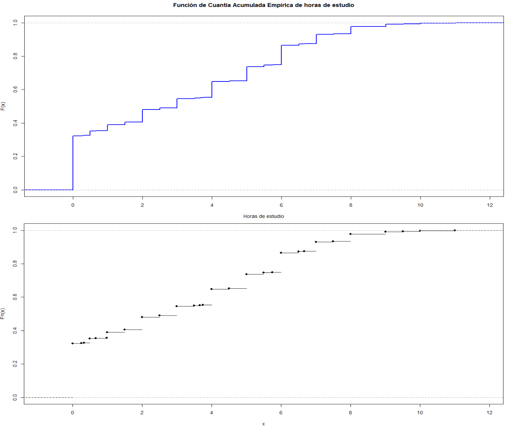

Resumen Ejecutivo:
Este trabajo busca entender el uso de tiempo que le dan los usuarios que consumen la plataforma de streaming Netflix, además se analizan características sociodemográficas de usuarios de la plataforma. El objetivo principal es identificar perfiles diferenciados de usuarios según sus actividades cotidianas, entorno familiar y contexto socioeconómico, además de entender por qué no están dedicando tiempo a la plataforma. Para ello, se adopta un enfoque multivariado que combina técnicas descriptivas, análisis factorial, métodos de agrupamiento y visualizaciones gráficas que permiten interpretar la estructura latente de los datos.
Los resultados permiten distinguir al menos tres grupos claramente diferenciados, con patrones contrastantes en cuanto al tiempo dedicado al estudio, ocio, trabajo y tareas domésticas. También se observaron diferencias relevantes por sexo y nivel educativo del hogar.
Introducción
El presente estudio busca comprender cómo los usuarios de Netflix organizan su tiempo diario, identificando posibles perfiles según variables personales, familiares y educativas. Se trabaja con datos exclusivamente de usuarios que declararon estar suscritos a la plataforma.
La estrategia metodológica combina análisis descriptivo con herramientas multivariadas. Inicialmente se realizó una limpieza de la base de datos y un resumen estadístico de las variables clave. Luego, se exploraron asociaciones entre variables mediante análisis bivariado y correlaciones. A partir de allí, se aplicó Análisis de Componentes Principales (PCA) para reducir la dimensionalidad y facilitar la interpretación de patrones complejos.
Adicionalmente, se incorporó el análisis de correspondencias como herramienta específica para estudiar las asociaciones entre variables categóricas. A través de gráficos de mosaico y técnicas como el Análisis de Correspondencias Simple (CA) y Múltiple (MCA), se exploraron visualmente las relaciones entre atributos cualitativos tales como edad, sexo, nivel educativo, acceso a recursos tecnológicos y contexto residencial, revelando estructuras latentes y perfiles de usuarios según sus condiciones y cómo estas se relacionan con el uso de tiempo en la plataforma de Netflix.
Sobre la base de estas exploraciones, se implementaron distintas técnicas de agrupamiento (clustering), tanto jerárquicas como no jerárquicas, para detectar perfiles homogéneos de estudiantes. Posteriormente, se evaluó el ajuste de los datos a una distribución normal multivariante, aspecto fundamental para la validez de ciertas técnicas estadísticas. Finalmente, se utilizó el análisis discriminante como herramienta de validación para examinar la capacidad predictiva de las variables y consolidar la interpretación de los grupos encontrados.
Marco Metodológico
Este trabajo emplea un enfoque cuantitativo basado en técnicas multivariadas aplicadas a datos previamente estandarizados. En primer lugar, se utilizó el Análisis de Componentes Principales (PCA), que permitió sintetizar la información de múltiples variables en un número reducido de componentes, facilitando la visualización e interpretación de las relaciones entre ellas.
Para abordar las variables categóricas del estudio, se incorporó el Análisis de Correspondencias. En una primera etapa, se utilizaron gráficos de mosaico para explorar visualmente la dependencia entre pares de variables cualitativas como sexo, años de educación, trabajo remunerado, acceso a tecnologías o servicios, entre otras. Luego, mediante el Análisis de Correspondencias Simple (CA), se estudió la relación entre la edad y el año educativo, obteniendo una representación bidimensional que reveló asociaciones significativas entre ambas variables. Finalmente, el Análisis de Correspondencias Múltiple (MCA), aplicado sobre la tabla disyuntiva y la tabla de Burt, permitió visualizar el posicionamiento relativo de múltiples categorías y su contribución a las dimensiones latentes del espacio factorial.
Posteriormente, se aplicaron técnicas de agrupamiento con el objetivo de identificar perfiles de usuarios con comportamientos similares. Se exploraron métodos jerárquicos (como el algoritmo de Ward y clustering divisivo tipo DIANA) y no jerárquicos (k-means, k-medoides y clustering difuso mediante fanny), evaluando la calidad de los agrupamientos mediante gráficos de silueta y proyecciones en el espacio PCA.
Dado que muchas técnicas multivariadas presuponen normalidad multivariante, se evaluó esta condición a través de simulaciones, gráficos Q-Q y distancias de Mahalanobis. Finalmente, se aplicó análisis discriminante lineal para validar la segmentación obtenida, evaluando la capacidad de las variables seleccionadas para predecir correctamente la pertenencia a los grupos definidos.
Datos
El conjunto de variables disponibles es amplio y permite caracterizar a cada usuario desde el punto de vista de su rutina diaria (tiempo dedicado a distintas actividades) y de su contexto sociodemográfico y familiar.
Se incluyen variables continuas como las horas diarias dedicadas a dormir, estudiar, alimentarse, asearse, realizar tareas domésticas, asistir a consultas médicas o participar en actividades recreativas. También se consideran variables de contexto como la edad del encuestado, el año educativo que cursa, el logaritmo del ingreso mensual del hogar y el promedio de años de educación de los adultos del hogar.
A nivel categórico, hay variables dicotómicas que indican la presencia o ausencia de determinadas condiciones (por ejemplo: si trabaja remuneradamente, si el hogar recibe Asignación Familiar, si tiene computadora o televisión con abono, si vive en Montevideo, etc.). Otras variables permiten identificar la composición del hogar en términos de activos, inactivos y personas con discapacidad.
Este conjunto de variables brinda una visión multidimensional de la situación de los usuarios, haciendo posible identificar perfiles diferenciados de uso del tiempo y asociarlos a factores sociales y económicos del hogar.
Análisis descriptivo:
Nuestro objetivo es caracterizar la distribución de las principales variables de interés: horas dedicadas a dormir, a consumir Netflix, ocio, tareas domésticas y otras actividades, así como resumir atributos sociodemográficos (sexo, edad, año cursado, logaritmo del ingreso). Empleamos estadísticas univariadas (medias, medianas, rangos) y visualizaciones para identificar patrones generales y posibles diferencias según grupos, sentando las bases para el análisis multivariado posterior. Es importante aclarar que las horas dedicadas a consumir Netflix no se incluyen como actividad de ocio.
Pre-Procesamiento
Antes de realizar análisis multivariados, llevamos a cabo una etapa de limpieza y preparación de los datos. En primer lugar, identificamos valores faltantes en la base. La única variable con datos nulos es aniosed_h (años de educación promedio de los adultos del hogar), con un único valor faltante. Ese caso fue eliminado para evitar distorsiones en los cálculos posteriores, dado que representa menos del 0.1% del total de observaciones.
Creamos un nuevo objeto llamado "cuantitativas" que solo contiene las variables numéricas que nos interesan estudiar: horas dedicadas a dormir (`h_dormir`), alimentarse, cuidado personal, estudio, tareas domésticas, ocio y atención médica; junto con datos sociodemográficos como edad, año que cursa (`anio_ed`), logaritmo del ingreso del hogar (`log_ing`), años de escolaridad del hogar (`aniosed_h`), y marcadores de actividad (`act`, `inact`) y discapacidad (`disc_h`). De esta forma aislamos en un solo data frame todas las medidas cuantitativas relevantes para nuestro análisis descriptivo, facilitando los siguientes pasos de resumen y visualización.
A continuación, utilizamos "summary(cuantitativas)" para obtener de manera inmediata un panorama de cada variable: el valor mínimo, el primer cuartil, la mediana, la media, el tercer cuartil y el valor máximo, así como el conteo de datos faltantes. Con este vistazo rápido descubrimos, por ejemplo, que los usuarios de Netflix duermen generalmente entre 6 y 9 horas (mediana alrededor de 8 h), que el tiempo de consumo de Netflix oscila con medianas cercanas a 2 h al día, y que en variables como `h_medico` la mayoría de los valores está en cero, indicando que pocos usuarios dedicaron tiempo a citas médicas en la jornada registrada.
Visualización Univariada
La visualización univariada permite explorar cómo se distribuye una sola variable en la muestra, proporcionando información clave sobre su forma, tendencia central, dispersión y posibles valores atípicos. Este tipo de análisis es fundamental como primer paso para comprender el comportamiento individual de cada variable antes de pasar a enfoques multivariados más complejos. En esta sección se presentan histogramas, diagramas de caja y tablas descriptivas que permiten examinar en detalle variables seleccionadas relacionadas con el uso del tiempo y el perfil sociodemográfico de los usuarios de Netflix.

Para observar la distribución de las horas dedicadas a dormir, se construyó un histograma (Figura 1) que agrupa los valores en intervalos de media hora. El gráfico revela una alta concentración en torno a las 7–8 horas, lo que indica que ese es el rango más común, mientras que la cola izquierda (menos de 5 h) y la derecha (más de 10 h) resaltan casos de sueño insuficiente o muy prolongado.

También se analizó el tiempo de consumo de Netflix en relación al sexo mediante un diagrama de caja (Figura 2). Observamos, por un lado, la mediana de horas de estudio para mujeres y para hombres, y por otro, la dispersión de cada grupo. Las mujeres presentan una mediana levemente superior y una caja más compacta; eso sugiere que un porcentaje importante de ellas dedica consistentemente más tiempo a consumir Netflix, con menos valores extremos, mientras que los hombres podrían mostrar mayor variabilidad.

Para ampliar el análisis, se graficó la distribución de horas dedicadas a todas las actividades del tiempo libre y obligaciones básicas (Figura 3). El histograma facetado permite ver que dormir y consumir Netflix tienen distribuciones más concentradas, mientras que actividades como tareas médicas o tareas domésticas tienden a presentar mayor asimetría y frecuencias bajas, con muchos estudiantes que no realizaron esas actividades durante el día observado.

Finalmente, se construyó una tabla de estadísticas agrupadas por sexo que resume las medias y medianas de algunas variables clave: horas de sueño, horas de consumo de Netflix, horas de ocio e ingreso del hogar. La tabla correspondiente se muestra en la Tabla 2. Los resultados indican que las mujeres duermen y consumen Netflix más que los varones, mientras que estos últimos dedican más tiempo al ocio. También se observa una leve diferencia en el ingreso promedio del hogar, siendo superior entre los hombres.
Análisis de asociación entre variables
Para comprender cómo se relacionan las distintas dimensiones del uso del tiempo y los factores sociodemográficos, se calculó la matriz de correlación entre las variables cuantitativas seleccionadas. En la Tabla 3 vemos que se realizó utilizando el coeficiente de correlación de Pearson sobre pares completos de observaciones.
Se elaboró un mapa de calor de la matriz de correlaciones, que puede verse en la Figura 4. En él, los colores más intensos señalan relaciones fuertes positivas o negativas, y las celdas en blanco o claras indican correlaciones débiles. Por ejemplo, detectamos que las horas de consumo de Netflix tienden a estar inversamente correlacionadas con las de sueño (quienes consumen más Netflix duermen un poco menos) y positivamente con las de ocio.

También se exploraron asociaciones específicas. En la Figura 5 se presenta un boxplot que compara las horas dedicadas a consumir Netflix según si el usuario trabaja remuneradamente o no. Se observa una clara diferencia: quienes tienen empleo tienden a consumir Netflix menos horas.

Por último, se observó la asociación entre el ingreso del hogar y el tiempo de ocio. Un coeficiente positivo de 0.0418 nos indica que los usuarios de contextos más acomodados tienden a disfrutar de un poco más de tiempo libre, tal vez porque tienen mayor acceso a actividades recreativas pagas o porque su entorno les ofrece más facilidades para el ocio.
Técnicas de análisis factorial
Para entender mejor la estructura de nuestros datos y reducir la complejidad de la información, aplicamos un Análisis de Componentes Principales (PCA) sobre un conjunto de variables cuantitativas seleccionadas. Estas variables incluían horas dedicadas a distintas actividades como dormir, alimentarse, consumir Netflix, ocio, tareas domésticas, visitas médicas, así como también variables como la edad, el año cursado en educación secundaria, el logaritmo del ingreso mensual del hogar y los años promedio de educación en el hogar.
Antes de aplicar el PCA, las variables fueron estandarizadas (es decir, convertidas a una escala común) para que ninguna dominara el análisis solo por tener un rango mayor. Luego, se ejecutó el PCA, que automáticamente reemplazó los valores faltantes por la media de cada variable.
A continuación, visualizamos la disposición de las variables en el espacio de los primeros dos componentes, coloreadas según su contribución. Esto nos permite observar qué variables tienen mayor influencia en la construcción de estos componentes y cómo se relacionan entre sí.

A partir de la Figura 6, observamos agrupamientos entre variables que se comportan de forma similar. Por ejemplo, las horas de consumo de Netflix y el nivel educativo suelen estar cercanas, indicando una posible asociación. Por otro lado, variables como las horas de dormir o las tareas domésticas se orientan en direcciones opuestas, mostrando que representan dimensiones distintas del uso del tiempo. Los colores más naranjas indican mayor contribución, los colores amarillos indican una contribución intermedia, los colores celestes indican una menor contribución.
También quisimos analizar cómo se distribuyen los individuos en función de los dos primeros componentes, lo que nos ayuda a detectar posibles agrupamientos o patrones generales.

La métrica $cos^2$ se usa para evaluar la calidad de la representación de una variable o de un individuo en un componente principal, e indica cuánto contribuye un componente a explicar la varianza de una variable. Cuanto más cercano a 1, el vector está casi alineado con el componente, bien representado por ese componente. Cuanto más cercano a 0, el vector forma un ángulo cercano a 90° con el componente, estando mal representado por ese componente. Esta métrica se usa para saber qué variables están bien representadas por los primeros componentes y da la calidad de la representación del individuo sobre el plano definido por los componentes.
En la Figura 7, los puntos que están más alejados del centro y con colores más intensos son aquellos que están mejor representados en el plano de los dos primeros componentes. Esto indica que sus perfiles son más extremos o definidos con respecto a las variables incluidas.

En la Figura 8, el eje X son los componentes principales ordenados del 1 al 10, las dimensiones. El eje Y es el porcentaje de varianza explicada por cada componente (desde 0% hasta 17.3%). Vemos que el primer componente (PC1) explica el 17.3% de la varianza, el segundo componente (PC2) explica el 14.3% y el tercer componente (PC3) explica el 12.7%. Los demás componentes subsiguientes van decreciendo en sus porcentajes asociados a explicar la varianza (10.5%, 9.1%, 8.1%, etc.).

Las flechas son las variables; el eje X es la Dimensión 1 y el eje Y es la Dimensión 2, los dos primeros componentes principales. La Dimensión 1 explica el 17.3% de la varianza total, la Dimensión 2 explica el 14.3% de la varianza. En conjunto, explican un 31.6% de la varianza total del conjunto de datos. Las flechas más largas indican que las variables están mejor representadas en el plano de los dos primeros componentes; las flechas más cercanas al origen indican que las variables no se explican bien en este plano. Las flechas orientadas hacia la derecha indican correlación positiva. Las flechas orientadas hacia la izquierda indican correlación negativa.
Luego, los ángulos pequeños entre flechas indican que las variables están positivamente correlacionadas; un ángulo recto de 90° indica poca o nula correlación. Un ángulo obtuso (180°) indica correlación negativa.
Luego, $cos^2$ da la calidad de representación de cada variable en el plano. El color rojo indica alta calidad de representación, el color verde indica una representación intermedia y el color violeta indica baja calidad.
Algunos ejemplos son: edad, aniosed_h y log_ing están bien representadas (rojas/naranjas). Luego h_ocio, h_dormir y h_medico están mal representadas (azules/violetas). Edad está bien representada porque contribuye a la Dimensión 1; luego aniosed_h y log_ing están bien representadas y están muy próximas (pueden estar correlacionadas positivamente). Otras como h_netflix son bastante perpendiculares a la variable edad, por lo que no parecen tener relación directa. Por último, h_dormir está mal representada en este plano.
Luego, exploramos qué variables contribuyen más a cada uno de los componentes. Esto es importante porque nos permite interpretar el significado de cada eje principal del análisis.

De la Figura 10, observamos que el primer componente tiene una fuerte carga de variables relacionadas con la educación (como años de educación, log_ing y año actual educativo), por lo que podríamos interpretarlo como un eje educativo o socioeconómico.

En cambio, el segundo componente está influido por la edad y las actividades domésticas, y en menor medida por las horas de consumo de Netflix; este eje podría reflejar un perfil de rutina.
Finalmente, obtuvimos los autovalores de los componentes principales, los cuales nos indican cuánta varianza explican. Esto nos ayuda a decidir cuántos componentes retener para el análisis.
Los autovalores nos muestran que los primeros componentes explican una parte importante de la varianza total del conjunto de datos, lo que justifica el uso de un plano bidimensional para la representación gráfica. Los primeros 5 componentes tienen autovalores > 1, explican en conjunto el 63.83% de la varianza total.
Análisis de Correspondencia
El análisis de correspondencias es una técnica estadística que permite explorar la relación entre dos o más variables categóricas. A través de tablas de contingencia y representaciones gráficas como los gráficos mosaico, es posible detectar patrones de asociación entre categorías y comprender cómo se distribuyen las observaciones en función de dichas combinaciones.
En este trabajo, se construyeron mosaicos para observar cómo varía la distribución de distintas características educativas, sociales y económicas en función del sexo de los usuarios, y cómo esto se relaciona con el consumo de Netflix.
Los gráficos mosaico utilizan colores para mostrar los residuos de Pearson (diferencias entre valores observados y esperados bajo independencia): azul indica más observaciones de las esperadas, rojo indica menos observaciones de las esperadas, y gris indica coincidencia con la independencia.

La Figura 12 resulta del análisis de correspondencias entre las variables categóricas disc_h, la cantidad de personas con discapacidad en el hogar (triángulos rojos), y act, la cantidad de personas activas económicamente en el hogar (puntos azules). Los puntos representan categorías de ambas variables proyectadas en un plano que explica la mayor parte de la variabilidad de la tabla: el eje X captura un 95.8% y el eje Y un 3.4% de la variabilidad. Vemos que cuanto más cerca estén dos puntos (uno rojo y uno azul), más frecuente es esa combinación en los datos; cuanto más lejos estén del origen, más aportan a la estructura de la asociación (más "atípicos" respecto a independencia).
Podemos observar que hay tres triángulos rojos que hacen referencia al número de discapacitados, los cuales están más alejados hacia la derecha. Esto puede indicar que hogares con más personas discapacitadas tienden a tener pocos miembros activos económicamente. Otra parte del plano muestra hogares con cero discapacitados, donde se aglomera la actividad económica. Como conclusión, los hogares con mayor cantidad de discapacitados tienden a tener menos miembros activos económicamente, mientras que los hogares sin discapacitados presentan una distribución más equilibrada, con más activos económicamente.

El gráfico de la Figura 13, un screeplot, muestra la proporción de varianza explicada por cada dimensión del ACM. Las primeras dos dimensiones suelen captar el mayor porcentaje de la variabilidad presente en los perfiles de las categorías. Si bien los porcentajes individuales son bajos (propio del ACM cuando hay muchas variables), se consideran útiles si las primeras dimensiones ayudan a discriminar perfiles típicos entre grupos sociales.

En la Figura 14 se observa cómo se distribuyen las categorías de las variables en el plano formado por las dos primeras dimensiones. Las categorías cercanas entre sí representan perfiles similares. Las más alejadas del centro (0,0) son las que más contribuyen a la estructura de la variabilidad. Las que están alineadas sobre un eje indican que explican mejor esa dimensión particular. Este mapa facilita la interpretación conjunta de asociaciones entre múltiples variables cualitativas.
Análisis de Clúster
El análisis de clúster es una técnica estadística multivariada cuyo objetivo principal es agrupar observaciones similares entre sí en función de sus características, sin requerir categorías predefinidas. Se trata de un método de clasificación no supervisada, lo que significa que no hay una variable dependiente o “etiqueta” que guíe el agrupamiento. En lugar de ello, el algoritmo identifica patrones y similitudes dentro del conjunto de datos, formando grupos o clústeres de forma tal que los elementos de un mismo clúster son más parecidos entre sí que respecto a los elementos de otros clústeres.
En este contexto, se parte del supuesto de que, en el espacio multidimensional donde están representadas las observaciones, existen zonas con mayor densidad de individuos y zonas de baja densidad que los separan. Cada subconjunto representa una clase o perfil identificado a partir de las variables observadas.
Esta técnica tiene múltiples aplicaciones. Permite reducir la complejidad del análisis mediante la construcción de una tipología o taxonomía de individuos, facilita la descripción de perfiles emergentes en el conjunto de datos y también detecta relaciones latentes entre variables a través del comportamiento grupal. En el marco del aprendizaje estadístico (statistical learning), el análisis de clúster se considera una herramienta exploratoria fundamental para entender la estructura de los datos y generar hipótesis de investigación.
En esta investigación, el análisis de clúster se emplea para identificar grupos de usuarios con patrones similares de uso del tiempo y características sociodemográficas. Se utilizó un enfoque jerárquico aglomerativo con el método de Ward y distancia euclídea, adecuado para minimizar la varianza interna de los grupos formados.
Para ello, se seleccionaron variables relevantes tanto del uso del tiempo (como h_dormir, h_netflix, h_ocio, h_domesticas, h_medico, etc.) como del contexto sociodemográfico (edad, anio_ed, log_ing, aniosed_h). Dado que estas variables se expresan en escalas diferentes, fueron estandarizadas mediante z-scores, lo que permite compararlas equitativamente al eliminar diferencias de escala y unidad de medida.
A continuación, se aplicará el análisis jerárquico paso a paso, presentando las visualizaciones necesarias para justificar la elección del número de clústeres, así como una caracterización de los grupos de usuarios resultantes.
Reglas de detención
Las reglas de detención son criterios estadísticos que ayudan a decidir cuántos grupos (clusters) conviene conservar en un análisis de clúster jerárquico. Como este tipo de análisis produce una jerarquía anidada de grupos, necesitamos algún criterio para "cortar" el dendrograma en una cantidad adecuada de clusters. En esta sección se aplican varios indicadores para definir la cantidad óptima de agrupamientos, combinando la inspección visual del dendrograma con tres índices comunes: el índice pseudo-F, el pseudo-T² y el ancho promedio de silueta.
En primer lugar, se seleccionan las variables cuantitativas más relevantes del conjunto de datos original. Estas variables representan actividades del uso del tiempo y características del entorno educativo y familiar. Se eliminan los valores faltantes para asegurar la correcta aplicación de los algoritmos de agrupamiento.

A continuación, se estandarizan los datos y se calcula una matriz de distancias euclidianas. Luego se aplica el método de Ward para construir el dendrograma jerárquico, que muestra visualmente cómo se agrupan las observaciones de forma progresiva. Este primer dendrograma no tiene cortes, ya que todavía no se ha definido la cantidad de clusters a conservar.

Para definir la cantidad adecuada de clusters en el análisis jerárquico, se aplicaron tres criterios frecuentemente utilizados en este tipo de estudios: el ancho promedio de silueta, el índice pseudo-F y el índice pseudo-t². En todos los casos se trabajó con datos previamente estandarizados, utilizando la distancia euclidiana como medida de disimilitud y el método de Ward como estrategia de agrupamiento.
El análisis del ancho de silueta promedio indicó que el valor más alto se obtiene con 3 clusters, aunque los valores para 2 y 4 también son relativamente altos. Esto sugiere que esas configuraciones también logran una buena separación entre grupos, sin una pérdida significativa de cohesión interna.
Respecto al índice pseudo-F, el mayor valor se encuentra en 2 clusters, y a partir de ahí comienza una disminución progresiva. Esto apunta a una fuerte ganancia de heterogeneidad entre los grupos al usar 2 clusters, aunque el descenso posterior no es abrupto, dejando margen para considerar otras particiones cercanas.
Por su parte, el índice pseudo-t² muestra una caída marcada al pasar de 4 clusters, lo que indica una pérdida de estructura al continuar fusionando grupos. Esta tendencia descendente se mantiene hasta alrededor de 12 clusters, lo que sugiere que más allá de ese punto los agrupamientos pierden sentido.

En base a la interpretación conjunta de los tres índices anteriores, se decidió conservar una solución de 3 clusters. Esta partición fue aplicada al dendrograma original de la Figura 25, coloreando cada grupo resultante para facilitar su visualización. Se observa una separación clara entre los grupos, lo que refuerza la validez de la elección.
Otra forma de ver esto es con la función "NbClust", que muestra el número óptimo de clusters para nuestros datos en base a distintas métricas. En este caso, usando la distancia euclidiana y el método de Ward, se obtiene que el número óptimo de clusters es 3.
En conjunto, los tres indicadores sugieren que la estructura más clara y consistente se encuentra entre 2 y 4 clusters. Considerando el equilibrio entre simplicidad y riqueza interpretativa, se decidió conservar 3 clusters como solución final. Esta elección permite capturar con mayor detalle las diferencias en los perfiles de uso del tiempo entre los usuarios de Netflix, sin perder solidez en la segmentación observada en el dendrograma.
Clúster Jerárquico Aglomerativo
El análisis comienza con la inspección de la matriz de correlaciones entre las variables numéricas seleccionadas. Esto es importante porque, si hay variables altamente correlacionadas, podrían dominar el cálculo de distancias y afectar tanto el clustering como el análisis de componentes principales.
Se detecta una relación positiva entre el logaritmo del ingreso (log_ing) y los años de educación promedio del hogar (aniosed_h), lo que indica que mayores niveles educativos se asocian a mejores ingresos. También hay correlaciones entre edad y año que cursa (anio_ed), las cuales deben considerarse en la interpretación posterior del agrupamiento.
Luego se realiza el clustering jerárquico utilizando distancia euclídea y el método de Ward, que busca minimizar la varianza intra-grupo.

En la Figura 19 se observa que algunas fusiones ocurren a alturas relativamente elevadas, lo que sugiere que existen estructuras diferenciadas en los datos que podrían justificar la división en un número reducido de clústeres. Este gráfico es una herramienta clave para decidir, junto con otros criterios, cuántos grupos conservar en el análisis final.
Una vez definida la cantidad óptima de clústeres en tres grupos, se procedió a asignar a cada usuario de Netflix su correspondiente clasificación. Luego, se calcularon las medias de las variables de interés por grupo, permitiendo caracterizar los perfiles resultantes. La Tabla 4 resume estas medias para cada clúster.

A partir del gráfico y de la tabla de resumen, se identifican tres tipos de usuarios de Netflix:
- Usuarios de Netflix equilibrados: Tienen horas de sueño similares al promedio general, dedican bastantes horas al consumo de Netflix y pocas horas a actividades domésticas. Dedican bastante tiempo al ocio y su rango promedio de edad es de 17 años. Casi todos tienen educación inicial y muy pocos trabajan. El 44% de los pertenecientes a esta categoría son hombres.
- Usuarios de Netflix dormilones: Dedican muchas horas a dormir, un tiempo considerable al consumo de Netflix y muy pocas horas a actividades domésticas; dedican menos horas al ocio que el grupo anterior. Su promedio de edad es de 15 años, un porcentaje muy bajo trabaja y el 53% son hombres.
- Usuarios de Netflix responsables del hogar: Dedican en promedio 7 horas a dormir, muchas horas a actividades domésticas y la menor cantidad de horas entre los tres grupos al consumo de Netflix; también dedican muy poco al ocio. Su edad promedio es de 27 años, ya son adultos y por eso dedican más tiempo a otras responsabilidades que no son el consumo de Netflix. Esto se refuerza al observar que casi el 50% de los integrantes de este grupo trabaja. Además, solo el 11% son hombres.
Para visualizar los clústeres en un plano reducido, se proyectan las observaciones sobre los dos primeros componentes principales (PCA). Los colores representan los clústeres definidos anteriormente.

Se observa que el grupo 3 presenta mayor dispersión, lo que sugiere una mayor heterogeneidad interna. En contraste, los grupos 1 y 2 se concentran en regiones específicas. Aunque la varianza explicada por los dos primeros componentes no es alta, el gráfico de la Figura 20 permite una visualización útil de la segmentación.
Para evaluar la calidad de la clasificación, se construye el gráfico de silueta, que indica qué tan bien está asignada una observación a un clúster en base a la similitud con los demás elementos del grupo.

Los valores de silueta sugieren que el grupo 1 tiene observaciones con asignaciones cuestionables, ya que presentan valores negativos de silueta. Los grupos 2 y 3 muestran mejores asignaciones de las observaciones en términos de silueta.
También se puede visualizar el dendrograma coloreado según los clústeres elegidos:

Finalmente, se analiza la descomposición de la varianza total entre varianza intra-grupo (WSS) y entre-grupo (BSS), mostrando que al aumentar el número de clústeres, la varianza dentro de los grupos disminuye y la varianza entre los grupos aumenta.
Varianza intra-clúster (WSS): 18.84748
Varianza entre-clúster (BSS): 81.15252
Tiene sentido que, al aumentar el número de clústeres, la varianza dentro de los grupos disminuya y la varianza entre los grupos aumente. Esto puede visualizarse gráficamente:

En la Figura 23 se evidencia que, a partir de cierto punto (en este caso k = 3), las ganancias de reducir la varianza intra-grupo se vuelven marginales, justificando así el número de clústeres seleccionado.
En el clustering jerárquico con Ward, los incrementos de varianza (hc_ward$height) están ordenados de menor a mayor, ya que el algoritmo fusiona primero los pares de clústeres que generan el menor aumento de varianza intra-clase y deja las fusiones más "costosas" (mayor incremento) para el final.
Clúster Jerárquico Divisivo
Luego de aplicar un análisis de clúster jerárquico aglomerativo con el método de Ward, decidimos complementar el estudio con un enfoque jerárquico divisivo, que parte del conjunto total de observaciones y las va dividiendo sucesivamente en grupos más pequeños. Este procedimiento resulta útil cuando se busca detectar "grupos disidentes" en un conjunto relativamente homogéneo y permite visualizar la estructura de disgregación desde una gran masa inicial.
En este caso, empleamos el algoritmo DIANA (Divisive ANAlysis Clustering), un algoritmo de clustering jerárquico divisivo que sigue la lógica de empezar con todos los elementos en un único grupo y luego dividirlos sucesivamente. Primero se inicia con todos los objetos en un solo clúster; en cada paso se selecciona el clúster con la mayor disimilitud interna, es decir, el más heterogéneo. Luego se busca dividir ese clúster en dos partes extrayendo el elemento más alejado (más disímil) del resto y se crea un nuevo clúster con él. Posteriormente, se asignan los demás elementos al nuevo clúster si están más cerca de este que del original (usando disimilitudes promedio). Este método se repite iterativamente hasta lograr una división clara en dos subconjuntos, y los pasos se repiten eligiendo el próximo clúster más disperso hasta que cada objeto esté en su propio clúster o se alcance una cantidad fija de clústeres.
Seleccionamos un conjunto de variables cuantitativas relevantes relacionadas con el uso del tiempo (horas de sueño, alimentación, consumo de Netflix, ocio, etc.) y variables sociodemográficas (edad, año cursado, ingreso logarítmico del hogar y escolaridad media del hogar). A continuación, se estandarizaron para asegurar comparabilidad entre escalas y evitar que variables con mayor rango numérico dominen el análisis.

Inicialmente, utilizamos k=3 y observamos que la división generaba un tercer grupo con un único elemento: un usuario de Netflix que dedicaba muchas horas a actividades médicas y prácticamente nada a las demás actividades. Dado que se trataba de un caso atípico, decidimos eliminarlo y volver a aplicar DIANA con k=2. En la Figura 24 se muestra el resultado de aplicar el algoritmo DIANA sobre los datos estandarizados. Posteriormente, se generó el dendrograma correspondiente, indicando una segmentación en 2 grupos (k=2) para mantener coherencia con la solución adoptada en el método aglomerativo.
El dendrograma muestra cómo se fue separando el conjunto inicial en subgrupos cada vez más homogéneos. Si bien la cantidad de observaciones hace que la visualización sea densa, el gráfico es útil para ilustrar la estructura general de disociación y los niveles de altura en los que se realizó el corte.

Dado que el dendrograma completo resulta difícil de interpretar visualmente por la cantidad de individuos, se generó un dendrograma alternativo con una muestra aleatoria de 100 usuarios de Netflix. Este gráfico permite apreciar mejor la estructura jerárquica del agrupamiento divisivo, mostrando con claridad cómo se ramifican los grupos desde la raíz hasta los clústeres finales.
La tabla presenta los valores promedio de once variables cuantitativas para los tres grupos obtenidos mediante el algoritmo jerárquico divisivo DIANA. Este método parte de un único grupo general e intenta dividirlo iterativamente, buscando maximizar la heterogeneidad entre subgrupos.

Al observar los resultados en la Tabla 5, se identifican tres grupos de usuarios de Netflix obtenidos mediante el método jerárquico divisivo DIANA:
- Grupo 1 – “Usuarios de Netflix balanceados”: Dedican más tiempo al ocio y a tareas domésticas en comparación con los otros grupos. Dedican menos tiempo al consumo de Netflix y a la atención médica, aunque este último sigue siendo significativo. Su edad promedio es de 17 años y presentan un mayor nivel educativo del hogar y a nivel individual, encontrándose en tercer año de educación secundaria.
- Grupo 2 – “Usuarios de Netflix disciplinados”: Dedican más tiempo al consumo de Netflix, más tiempo a la atención médica y menos tiempo al ocio y a tareas domésticas. Su edad promedio es de 16 años y, en promedio, se encuentran a mitad del segundo año de educación secundaria. Presentan un nivel educativo menor, acorde con su edad, y un ingreso logarítmico del hogar levemente mayor.
Esta segmentación permite enriquecer la lectura del fenómeno estudiado, destacando que no todos los jóvenes usuarios de Netflix comparten los mismos estilos de vida ni condiciones de contexto.
Clúster No Jerárquico
Además del enfoque jerárquico, exploramos métodos de clasificación no jerárquicos, que permiten agrupar a los usuarios de Netflix sin asumir una estructura en forma de árbol. A diferencia del clustering jerárquico, los métodos no jerárquicos, como k-means, k-medoides y fuzzy clustering, parten de una cantidad fija de grupos (k) y asignan directamente cada observación a uno (o varios) clústeres. Esto se realiza mediante un proceso iterativo que optimiza la coherencia interna de cada grupo.
En esta sección aplicamos y comparamos tres enfoques no jerárquicos:
- K-means: Busca minimizar la variabilidad dentro de los grupos a partir de centroides móviles.
- K-medoides: Utiliza observaciones reales como centros representativos, haciéndolo más robusto ante valores atípicos.
- Fuzzy clustering: Permite que una misma observación pertenezca parcialmente a más de un grupo, con distintos grados de pertenencia.
Cada técnica se evaluó con herramientas gráficas (como siluetas) y se comparó con las estructuras halladas en el análisis jerárquico.
K-Means
El método K-Means es una técnica fundamental del análisis multivariado que busca dividir un conjunto de datos en K grupos distintos. Su lógica se basa en la similitud entre las observaciones: cada punto se asigna al grupo cuyo centroide (la media de todas las observaciones de ese grupo) es el más cercano.
El proceso es iterativo. Comienza con una selección inicial de K centroides aleatorios. Luego, cada observación se asigna al centroide más cercano. Posteriormente, los centroides se recalculan como la media de los puntos ahora asignados a ellos. Este ciclo de asignación y actualización se repite hasta que los centroides se estabilizan, es decir, cuando la agrupación deja de cambiar significativamente.
Además del análisis jerárquico, se implementó K-Means para realizar una partición no supervisada de los usuarios según sus características. Para determinar el número óptimo de clústeres, se utilizó la función NbClust, que evalúa múltiples índices de validación interna. Según la regla de la mayoría, la mejor partición se obtiene al dividir los datos en 3 clústeres. Esta elección fue respaldada por los resultados del método del codo (WSS) y el análisis del ancho promedio de silueta, ambos implementados mediante la función fviz_nbclust. En ambos casos, k=3 aparece como una buena elección en términos de balance entre cohesión y separación de grupos.
Con base en esto, se ajustó el algoritmo de K-Means para k=3. Se obtuvo una partición estable, con tamaños de grupo relativamente balanceados y una varianza entre grupos considerable respecto a la varianza total, lo que indica una buena diferenciación entre los clústeres.


Como complemento, también se probó la partición para k=4 y se evaluaron ambas configuraciones con gráficos de silueta. En estos gráficos se observa que la solución con 3 clústeres presenta mejores valores promedio, indicando una asignación más consistente de las observaciones a sus respectivos grupos. En cambio, la solución con 4 clústeres incluye algunos casos con valores negativos de silueta, lo que sugiere que ciertas observaciones podrían estar mal asignadas.
En función de estos resultados, se concluye que la partición en 3 grupos ofrece un buen equilibrio entre simplicidad y separación, y fue seleccionada como solución final para el análisis con K-Means.
K-Medoides
El método K-medoides, al igual que K-means, busca particionar las observaciones en k grupos a partir de la similitud entre ellas. La diferencia clave es que los centros de los grupos son observaciones reales del conjunto de datos —denominadas medoides— en lugar de promedios. Esto hace que el método sea menos sensible a valores atípicos y más adecuado en contextos donde un centroide no tiene interpretación significativa.
El procedimiento comienza seleccionando k medoides iniciales, y en cada iteración se agrupan las observaciones según su cercanía a estos. Si al intercambiar un medoide con otra observación del grupo se logra reducir la variabilidad interna, se realiza el cambio. El algoritmo continúa hasta que la estructura de los grupos se estabiliza.
Esta técnica es especialmente útil cuando se requiere mayor robustez frente a datos extremos o cuando se desea trabajar exclusivamente con observaciones reales como referencia de cada grupo.
Se observa que pam() retorna la asignación de cada observación a uno de los tres grupos (clustering), los índices de los medoides elegidos (medoids) y un resumen por grupo que incluye el número de elementos, la distancia media dentro del clúster y el ancho promedio de silueta.
A continuación, representamos gráficamente la calidad de la partición mediante el gráfico de siluetas, que permite visualizar qué tan bien asignadas están las observaciones a sus respectivos grupos.

En la Figura 28, cada barra representa una observación y su valor de silueta. Valores cercanos a 1 indican una buena asignación; valores cercanos a 0 o negativos indican asignaciones dudosas o incorrectas.
El gráfico de siluetas muestra un valor promedio de 0.09, lo cual indica una estructura de clústeres débil. La mayoría de las observaciones tienen valores cercanos a cero e incluso negativos, en especial dentro del clúster 3. Esto sugiere que muchas asignaciones fueron poco consistentes y que las fronteras entre grupos son difusas.
Finalmente, visualizamos los clústeres en el espacio reducido por PCA.

La Figura 29 permite observar la separación entre los grupos definidos por K-medoides. Aunque esta proyección reduce la información de muchas variables a solo dos componentes, es útil para ilustrar la separación general entre clústeres.
La proyección en el plano de componentes principales confirma la idea anterior. Si bien se observan concentraciones parciales de observaciones por grupo, no hay una separación clara entre clústeres. Los colores se superponen y las regiones asignadas a cada grupo se mezclan, lo que coincide con los bajos valores de silueta. En conjunto, estos resultados indican que la partición obtenida por K-medoides logra capturar algunas diferencias generales entre los usuarios de Netflix, pero no logra formar grupos bien definidos.
Fuzzy Clustering
El fuzzy clustering se utiliza cuando no hay claridad sobre la pertenencia de una observación a un grupo o cuando existen solapamientos entre grupos. En lugar de asignar cada observación a un único clúster, este método permite que una observación pertenezca a varios clústeres simultáneamente, con distintos grados de pertenencia, que indican la probabilidad de que la observación pertenezca a cada grupo.

Cada barra de la Figura 30 representa una observación de nuestros datos. La altura de la barra corresponde al valor de silueta, que indica qué tan bien asignada está una observación al clúster correspondiente. Valores mayores a 1 indican una buena asignación (el punto está cerca del centro del grupo). Valores menores a cero indican una mala asignación. La línea roja punteada representa la media global, en este caso 0.14.
Podemos representar los clústeres fuzzy mediante PCA, reduciendo a dos dimensiones.

Otro gráfico útil muestra, para los dos clústeres obtenidos con PCA, el grado de pertenencia de cada observación. Las observaciones más claras tienen una pertenencia menos probable al grupo, mientras que las más oscuras tienen una pertenencia más probable al grupo.

Comparación entre métodos

Interpretación de las comparaciones:
- Coeficiente de Silueta: Se mueve en un rango de -1 a 1, donde valores cercanos a 1 indican buenas asignaciones y valores cercanos a -1 indican asignaciones incorrectas. DIANA obtuvo el mejor valor (0.36), sugiriendo la estructura de clústeres más clara. K-means (0.13) y Fuzzy (0.096) tuvieron resultados mediocres. Ward y K-medoides obtuvieron los valores más bajos (~0.09).
- Índice Rand Ajustado (ARI_vs_Ward): Compara la similitud de las asignaciones de los métodos con respecto a Ward. K-means mostró la mayor similitud (ARI=0.34), DIANA y K-medoides tuvieron concordancia baja pero positiva, y Fuzzy mostró la peor similitud.
- Índice Dunn: Mide separación entre clústeres (valores altos son mejores). DIANA destacó nuevamente (0.107), seguido de Fuzzy (0.084), mientras que los otros métodos mostraron valores bajos.
- Davies-Bouldin: Mide compacidad y separación (valores bajos son mejores). Fuzzy fue el mejor con 0.77, seguido por DIANA (0.99); Ward y K-medoides obtuvieron peores resultados.
- Calinski-Harabasz: Ratio entre dispersión inter e intra-clúster (valores altos son mejores). K-means obtuvo 82.27, siendo el mejor entre los métodos; DIANA y Fuzzy tuvieron bajo rendimiento.
Conclusiones generales: DIANA resultó ser el método más eficiente debido a su mayor coeficiente de silueta (0.36) y buen balance en los índices Dunn y Davies-Bouldin, aunque su ARI con Ward fue moderado (0.12). K-means tuvo resultados variados, destacando en Calinski-Harabasz (82.27) pero menor desempeño en silueta (0.13) y Dunn (0.033), aunque mostró alta concordancia con Ward (ARI=0.34). Fuzzy tuvo buen rendimiento en Davies-Bouldin (0.77) pero mal desempeño en Calinski-Harabasz (1.42) y casi nula correlación con Ward (ARI≈0). Finalmente, Ward y K-medoides mostraron menor desempeño en las distintas métricas.
Distribución Normal Multivariante
La distribución normal multivariante es la generalización de la distribución normal univariada al caso de vectores aleatorios. Un vector $X \in \mathbb{R}^p$ tiene distribución $N_p(\mu, \Sigma)$ si su función de densidad está dada por:
\(f_X(x) = \frac{1}{(2\pi)^{p/2} |\Sigma|^{1/2}} \exp\left\{ -\frac{1}{2}(x - \mu)' \Sigma^{-1} (x - \mu) \right\} \)
donde $\mu$ es el vector de medias y $\Sigma$ la matriz de covarianzas, que debe ser simétrica y definida positiva.
Esta distribución es fundamental porque muchas técnicas multivariadas, como el análisis discriminante, MANOVA o incluso los métodos de inferencia aplicados al clustering, asumen normalidad multivariante. Esta condición garantiza que los estimadores de máxima verosimilitud de $\mu$ y $\Sigma$ coincidan con la media y la matriz de covarianza muestrales, respectivamente.
Además, la normal multivariante permite aplicar resultados clave, como la distribución de Wishart para matrices de covarianza, y facilita el uso de herramientas de inferencia basadas en la teoría asintótica, lo que resulta especialmente útil al interpretar estructuras de grupos en análisis de conglomerados y PCA.

En el gráfico de la Figura 33, que muestra cuantiles teóricos contra distancias de Mahalanobis observadas, se observa que los puntos iniciales se alinean bien con la línea diagonal punteada, pero las observaciones en los extremos se alejan de ella, especialmente en la parte superior derecha. Estas desviaciones sugieren la presencia de valores atípicos o casos con mayor distancia al centro de la distribución. La desviación sistemática en la cola superior indica que la distribución presenta colas más pesadas que una normal multivariante, y la curtosis multivariada es mayor a la esperada bajo normalidad. Además, la discontinuidad en los valores observados, evidenciada por saltos en los puntos, indica que no se cumple el supuesto de multinormalidad. Esto se confirmó mediante la función `testes.R` en R, obteniendo un p-valor menor a 0.05, por lo que se rechazó la hipótesis nula de multinormalidad.
Análisis Discriminante

La variable dependiente Y_netflix se construyó a partir de la variable original h_netflix, que representaba el número de horas dedicadas al consumo de Netflix, una variable cuantitativa continua. Con Y_netflix, convertimos h_netflix en una variable categórica ordinal, dividiendo su rango en tres categorías: “poco”, “intermedio” y “mucho”. Para esto se utilizaron los terciles de la distribución de h_netflix, que particionan el conjunto de datos en tres grupos de igual tamaño (33% cada uno). Los puntos de corte fueron:
| Inicio | Final | Categoría |
|---|---|---|
| 0.0 | 0.5 | Poco |
| 0.5 | 5.0 | Intermedio |
| 5.0 | 11.0 | Mucho |
Las frecuencias observadas fueron: 241 individuos en “poco”, 265 en “intermedio” y 180 en “mucho”, resultando en una partición balanceada.
Se utilizó el script testes.R para verificar multinormalidad, homoscedasticidad e igualdad de medias. Los resultados indicaron que no se cumple la multinormalidad, por lo que no era adecuado aplicar análisis discriminante lineal ni cuadrático. Además, debido a la presencia de variables cualitativas y cuantitativas, se optó por un análisis discriminante logístico.
Se ajustó un modelo que explica las horas de consumo de Netflix en función de todas las demás variables. La matriz de confusión obtenida fue:
| Real | Predicho | ||
|---|---|---|---|
| Poco | Intermedio | Mucho | |
| Poco | 153 | 64 | 24 |
| Intermedio | 64 | 153 | 48 |
| Mucho | 27 | 71 | 82 |
Se evaluó el rendimiento mediante curvas ROC para cada clase. Los resultados fueron:
| Poco | Intermedio | Mucho |
|---|---|---|
| 0.797 | 0.687 | 0.780 |

La curva ROC refleja la capacidad del modelo para discriminar entre las clases. Valores de AUC cercanos a 1 indican buena capacidad discriminativa, mientras que valores cercanos a 0.5 indican desempeño similar al azar. En este caso, las categorías “poco” y “mucho” presentan un AUC mayor a 0.75, mientras que “intermedio” tiene un rendimiento más bajo (0.687).
Conclusión
El análisis de los datos permitió caracterizar de forma profunda y estructurada los patrones de organización temporal de los usuarios de Netflix. A través de técnicas descriptivas, análisis factorial, métodos de agrupamiento y análisis de correspondencias, se obtuvieron hallazgos significativos sobre el uso del tiempo.
En la etapa descriptiva, se observaron diferencias según el sexo, destacando mayor carga de trabajo no remunerado y menor tiempo libre en mujeres. También se identificaron desigualdades vinculadas a trabajo remunerado, edad y entorno educativo, respaldadas por medidas de tendencia central, dispersión y visualizaciones detalladas de distribución de actividades y tiempos.
Desde la perspectiva multivariada, se asumió distribución normal multivariante para justificar el uso de técnicas como PCA, permitiendo reducir dimensionalidad e identificar combinaciones lineales de variables que explican gran parte de la varianza. Esto facilitó interpretar perfiles de usuarios según patrones de actividad.
El análisis de correspondencias permitió explorar relaciones entre variables cualitativas, visualizando asociaciones relevantes entre sexo, educación, tenencia de hijos, uso de tecnología y entorno familiar. El Análisis de Correspondencias Simple (CA) y Múltiple (MCA) ofrecieron una representación robusta de relaciones entre múltiples dimensiones.
Los métodos de agrupamiento jerárquico (Ward y DIANA) y no jerárquico (K-medoides, K-means y clustering difuso tipo Fanny) permitieron identificar grupos homogéneos dentro de la población de usuarios. Se observó una estructura óptima de tres clusters, diferenciados por carga horaria, edad, ingreso y nivel educativo del hogar.
El análisis discriminante logístico aportó evidencia adicional sobre la relevancia de variables como horas de Netflix, trabajo doméstico, ocio y educación del hogar para diferenciar a los usuarios, validando estadísticamente los clusters formados.
En conjunto, los resultados muestran que el uso del tiempo entre los usuarios de Netflix no es homogéneo ni aleatorio, sino que responde a configuraciones estructurales, sociales y económicas. La combinación de técnicas multivariadas enriqueció el análisis, ofreciendo una visión más precisa sobre los determinantes del tiempo cotidiano y el consumo de Netflix. El análisis de correspondencias aportó información sobre cómo las condiciones del entorno y los recursos del hogar están interrelacionados con el consumo de Netflix.